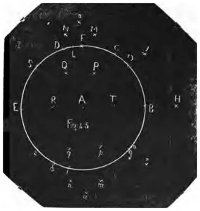

Book VI: Square Roots¶
Libro Sesto: Delle radici (§§ 100–109)
Unified compass-only radical lattices (§§ 100–109, pp. 51–60, folios 0076–0085): generating \(\sqrt{1}\) through \(\sqrt{10}\) in a single compact figure (§ 100), extending to \(\sqrt{36}\) (§§ 101–103), constructing all 25 half-roots \(\frac{1}{2}\sqrt{1}\) through \(\frac{1}{2}\sqrt{25}\) (§§ 104–107), and refining acute intersection angles (§§ 108–109).

§§ 104–107: Half-Roots ½√1 through ½√25
104. Problem. To find (Fig. 45) easily the halves of the roots of the whole numbers from one to twenty-five.
§§ 108–109: Acute-Angle Refinement & Alternative Root Scheme
108. In the preceding construction, care was taken to employ as much as possible the first compass of opening \(= 1\), with which the circumference \(BDd\) was described, which, preserving the fundamental opening, deserves more trust than the others. Likewise, it was desired to employ only the three most notable first compasses (§ 107). This caused a few intersections of the arcs to turn out at somewhat acute angles, such as those of points \(S, s, O, o\), and even more those of points \(L\) and \(l\). Whoever wishes to have all angles of intersection closer to a right angle may use the following